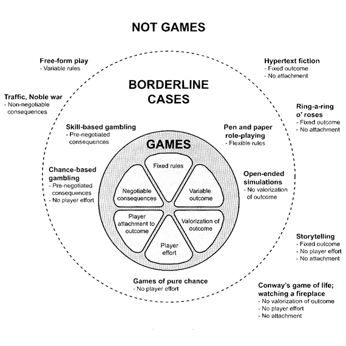
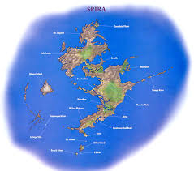
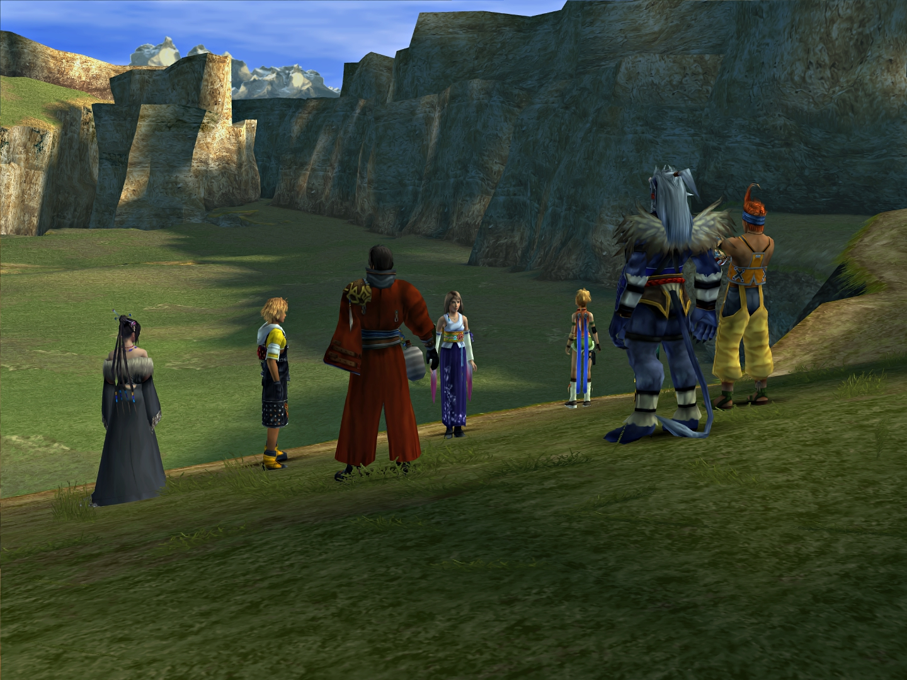

Game Design Process II
(Narrative Aspect: Story and Encounter Design)
Jesper Juul's game model
“the actantial model, also called the actantial narrative schema, is a tool used to analyze the action that takes place in a story, whether real or fictional. It was developed in 1966 by semiotician Algirdas Julien Greimas.”
|  | ||
|  |
movie director Ridley Scott created video content for
“Call Of Duty” Elite
Use of game engines for animation production.
Branching storyline of The Banner Saga.